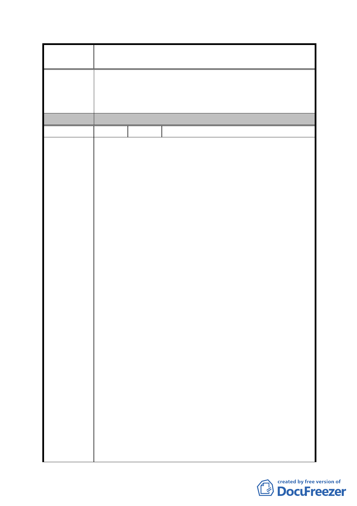

案
名
修訂臺北市「基隆河（中山橋至成美橋段）附近地區土地使
用分區與都市設計管制要點」（北段地區）計畫案
五、停車空間設置標準議題：
北段商業區（供商業購物中心使用）街廓編號 A2 法定汽
機車停車數量應符合本基地之交通影響報告書汽機車停
車數量。
委 員 會 決 議 同編號 1。
編 號 32 陳情人 宏普建設股份有限公司
一、土地及建築物之使用：
考量當地商業經營規模及商業活動型態，3 層以上作商業
使用在經營上有其困難度，故建議依陳情建議方案修正
之，允許商業使用集中於地面層第一至第二層。
二、土地使用強度：
1.經分析於引用綜合設計放寬獎勵之規定時，若最小建蔽
率須＞40％時，並扣除不屬建蔽率之陽台、雨遮、車道等
（約佔 10％），再扣除後院或側院等不得計入之開放空間
之空地面積，即難以設計足夠之開放空間有效面積。
2.台北好好看之政策目標希冀能妥善運用土地資源，提供
豐富多元之公益及公共服務設施，提升城市魅力，並鼓勵
留設大面積之公共開放空間。故若規範最小建蔽率，將影
響建築設計彈性與開放空間品質。
陳 情 理 由 三、容積放寬規定：
1.台北好好看申請案鼓勵留設廣場式開放空間、地面人行
通道、跨堤設施、立體人行通道、挑空室內開放空間、其
他具形塑都市意象、創造特殊都市生活體驗空間等，並給
予容積獎勵，原法令內容並無容積獎勵上限之規定。
2.本區除低層部須作指定使用外，其餘樓層可比照原台北
市土地使用分區管制規則第三種商業區之規定辦理。而本
區基準容積為 200％，屬中低度開發地區，即使所申請之
容積獎勵增加至基準容積 70％，獎勵後容積率遠低於第三
種商業區 560％之容積率，故不致有開發強度過高之現象。
四、建築物高度：
都市景觀軸線應給予各開發基地更彈性多元的發展空
間，而不是以限高方式強制規定。本案因配合台北好好看
之政策目標，故建蔽率須予以限縮以提供規劃設計多元豐
- 93 -